36 choses à enlever ou à simplifier (26 à supprimer · 5 à fusionner · 2 à cacher · 2 à simplifier · 1 à déplacer), tirées de 7 tours complets de l'app (275 écrans), chacune vérifiée dans le code de main. Aucune n'ajoute d'écran ni de bouton.
Comment lire. À gauche, l'écran d'aujourd'hui, ce qui part en rouge. À droite, la solution, faite avec les vrais pixels de l'app, ce qui change en vert.
Ce qui n'y est pas. Les 122 points du premier passage, les 40 d'Unification et les 20 d'Espaces ne sont pas repris. Les points que tu as déjà refusés non plus.
Contrôle. Jev a relu chaque proposition contre les règles déjà tranchées. Il a écarté la barre des takes à note, que tu avais rendue noire le 25/09.
Tour 1 · Navigation et réglages
1Supprimer « 0 take » au-dessus de « Aucun take à proximité »
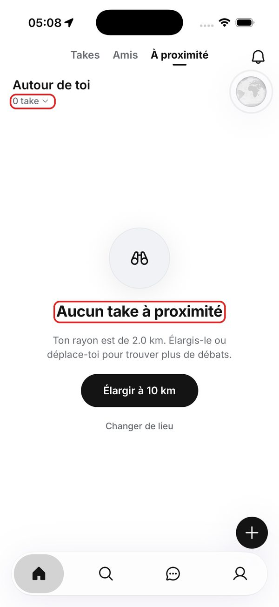
Aujourd'hui
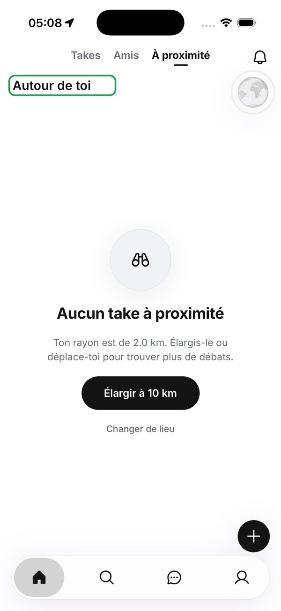
Solution
Aujourd'hui. À proximité vide : l'en-tête dit « 0 take » et, juste dessous, l'écran dit « Aucun take à proximité ».
Solution. Le compteur s'efface quand la liste est vide : l'état vide le dit déjà, avec « Changer de lieu ».
Dans le code : app/(app)/(home)/index.tsx:884 : count part dès que nearbyTotal !== null, zéro compris.
2Supprimer « Utiliser ma position » / « Utilise ta position actuelle »
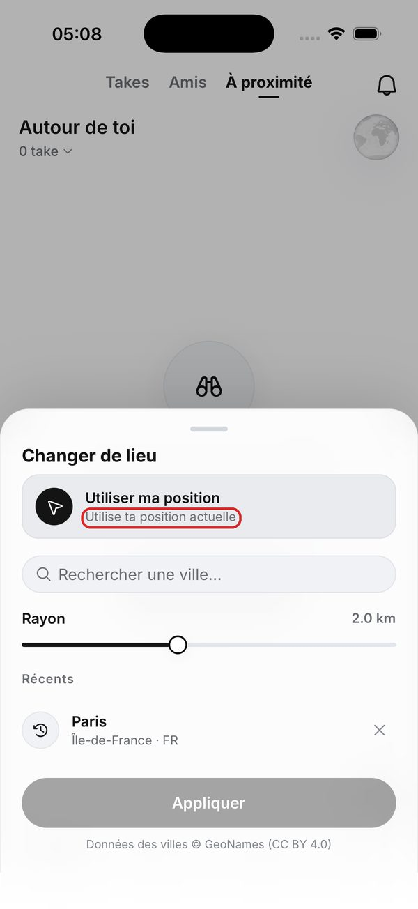
Aujourd'hui
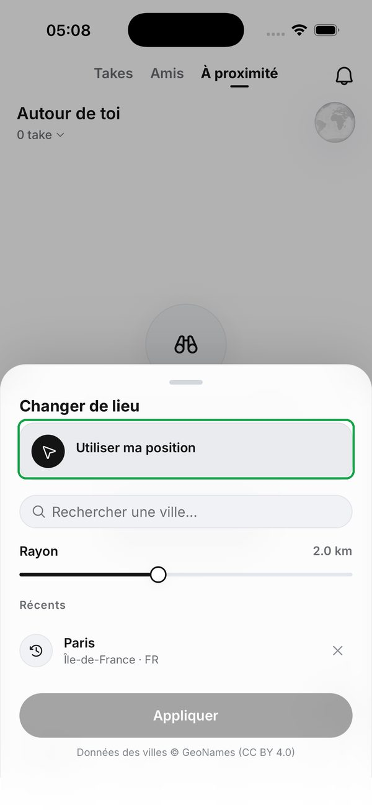
Solution
Aujourd'hui. Dans « Changer de lieu », le bouton dit deux fois la même chose : son titre et son sous-titre. Même doublon dans le composeur, sous « Publier ici précisément ».
Solution. Le titre seul, centré dans la rangée.
Dans le code : AreaPickerSheet.tsx:521 : nearby.locationSourceHint sous les deux titres.
Solution. Le crédit rejoint À propos › Licences, à côté des autres crédits CC BY : la licence demande un crédit raisonnable, pas sur chaque écran.
Dans le code : AreaPickerSheet.tsx:734, 739 et 753 : trois rendus de nearby.cityDataAttribution.
4Supprimer « Build f3450f4a8254 » dans À propos
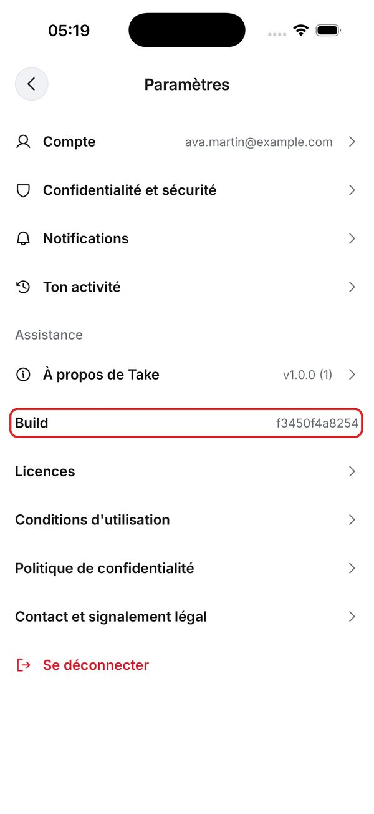
Aujourd'hui
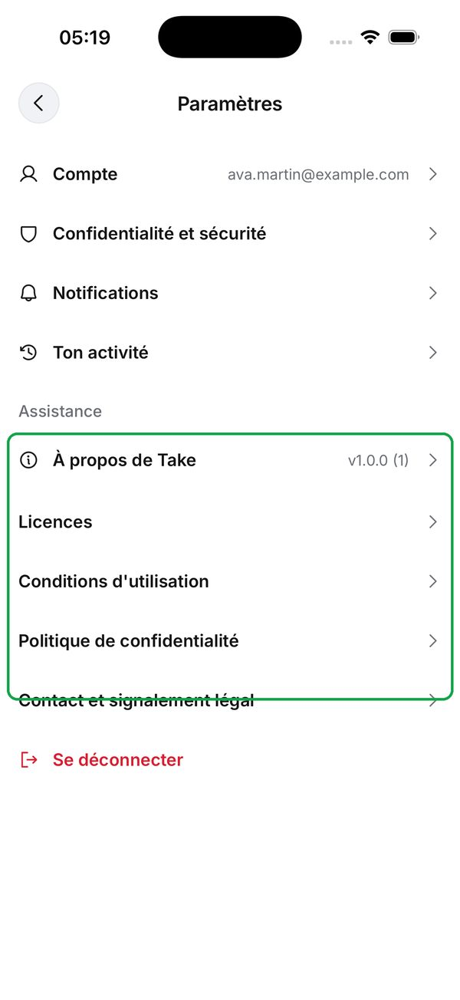
Solution
Aujourd'hui. La version « v1.0.0 (1) » est sur la ligne À propos, et la ligne dépliée ajoute « Build f3450f4a8254 », un identifiant de déploiement.
Solution. La version suffit à l'utilisateur ; l'identifiant reste dans les journaux et pour le support.
Dans le code : app/(app)/settings/index.tsx:211-216 : settings.buildId → RUNTIME_ID.
5Supprimer Nom et nom d'utilisateur, à deux endroits
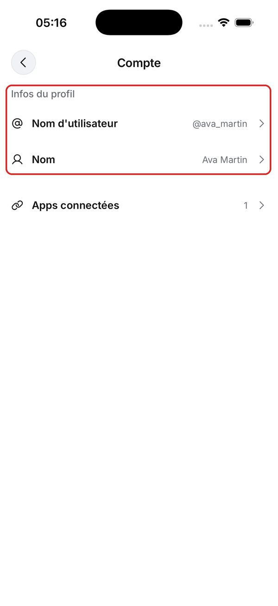
Aujourd'hui
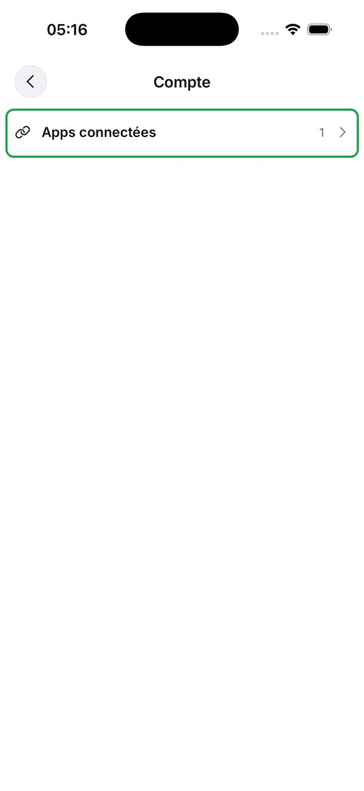
Solution
Aujourd'hui. Paramètres › Compte ouvre « Nom d'utilisateur » et « Nom », exactement le même éditeur que Modifier le profil, à deux écrans de là.
Solution. Une seule porte, Modifier le profil. Compte garde Apps connectées (et la suppression du compte quand elle est ouverte).
Dans le code : app/(app)/settings/account.tsx:48 et 55 poussent /(app)/edit-field avec username et name, comme edit-profile.tsx:106.
6Supprimer « Un jeton d'accès déjà émis… »
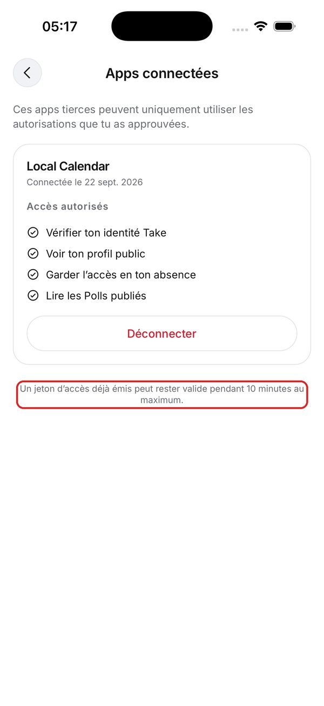
Aujourd'hui
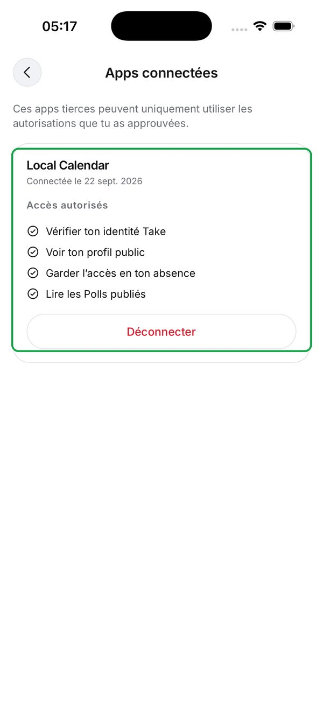
Solution
Aujourd'hui. Sous chaque app connectée : « Un jeton d'accès déjà émis peut rester valide pendant 10 minutes au maximum. »
Solution. Le bouton « Déconnecter » suffit ; ce délai technique va dans la politique de confidentialité.
Dans le code : src/i18n/locales/fr.json:262 : tokenWindow, affiché sous la carte.
7Supprimer « Liens partagés » : une section sans réglage
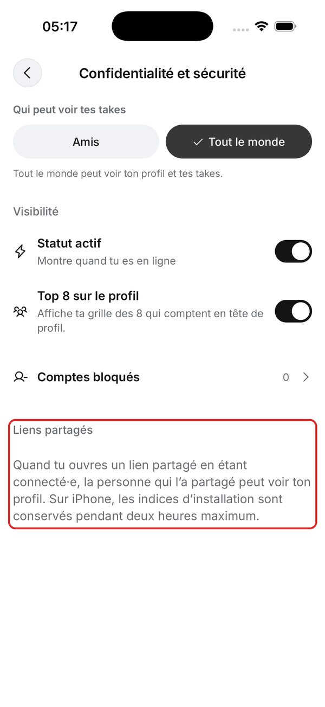
Aujourd'hui
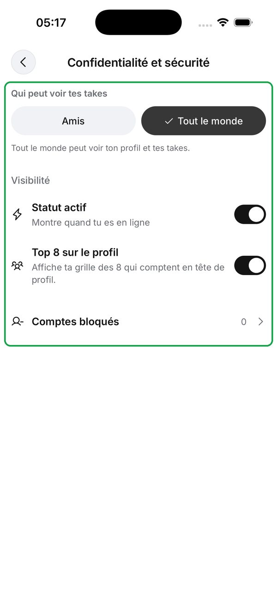
Solution
Aujourd'hui. Confidentialité et sécurité finit par une section « Liens partagés » qui n'est qu'un paragraphe, sans interrupteur ni lien.
Solution. La section part ; sa phrase rejoint la politique de confidentialité.
Dans le code : app/(app)/settings/privacy.tsx:172-174 : shareLinksTitle + shareLinksDisclosure, rien d'autre.
8Cacher « Comptes bloqués 0 › » vers une page vide
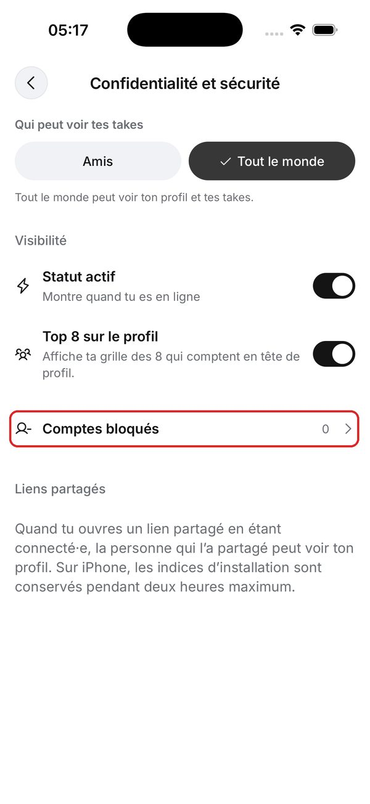
Aujourd'hui
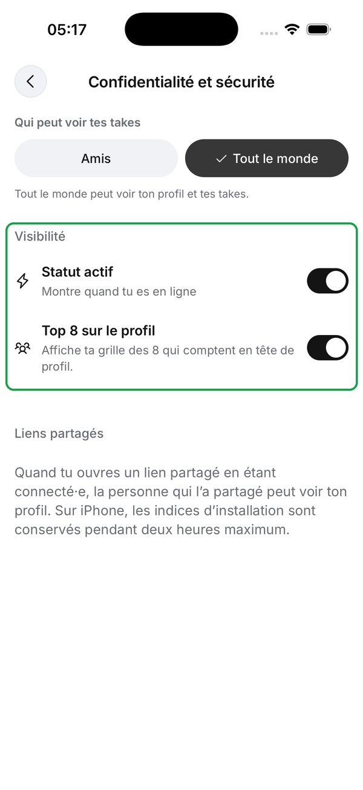
Solution
Aujourd'hui. La ligne « Comptes bloqués 0 › » ouvre une page qui dit « Aucun compte bloqué. » (t1-31). Même règle que le 142, accepté pour Apps connectées vide.
Solution. La ligne n'apparaît qu'à partir d'un compte bloqué.
Dans le code : app/(app)/settings/privacy.tsx:165-170 : la ligne s'affiche avec blockedCount, zéro compris.
9Supprimer Sept fichiers de police chargés au lancement, jamais utilisés
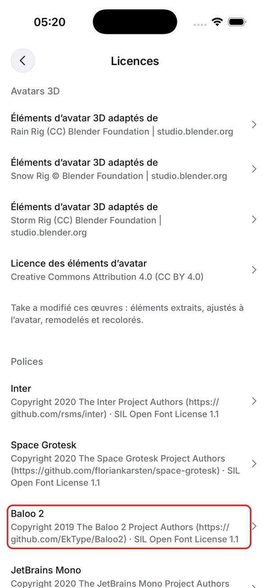
Aujourd'hui
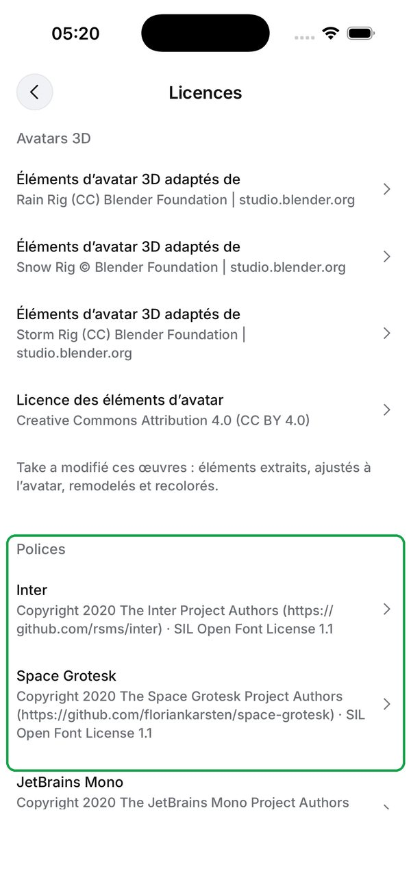
Solution
Aujourd'hui. L'app charge 17 fichiers de police avant d'afficher quoi que ce soit. Baloo 2, Fraunces (2), Work Sans (2) et deux graisses de JetBrains Mono ne sont utilisés nulle part ; Baloo 2 figure même dans Licences.
Solution. Les sept fichiers sortent du paquet et de Licences : l'app démarre plus légère, la liste des licences raccourcit.
Dans le code : src/constants/fonts.ts:86-104 : GAME_FONTS chargé par useFonts (app/_layout.tsx:66) ; FONT_DISPLAY, FONT_MONO, FONT_MONO_MEDIUM, Fraunces et Work Sans : zéro usage ailleurs.
Tour 2 · Le fil et un take
10Supprimer L'étiquette « CONTEXTE » dans sa propre carte
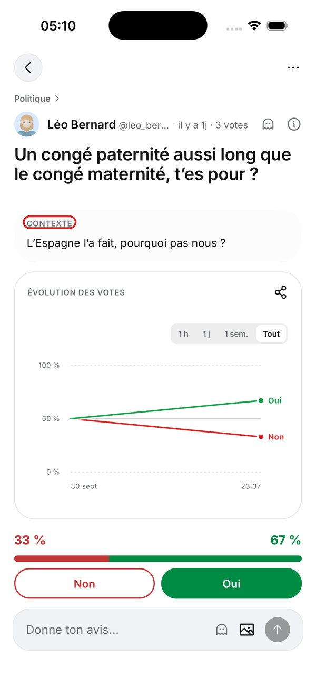
Aujourd'hui
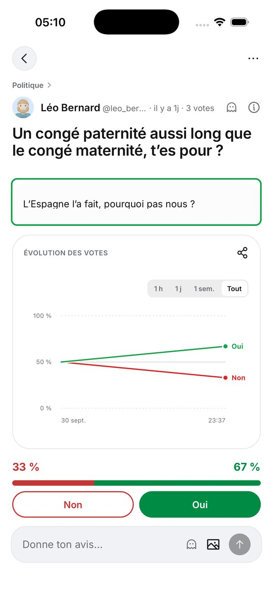
Solution
Aujourd'hui. Le contexte de l'auteur est déjà dans une carte grise sous la question, et la carte porte encore le mot « CONTEXTE » en capitales.
Solution. La carte seule, sa phrase centrée.
Dans le code : src/components/poll/TakeBackFace.tsx:93 : pollComments.contextTitle.
11Simplifier 1 h, 1 j, 1 sem., Tout sur un take d'un jour
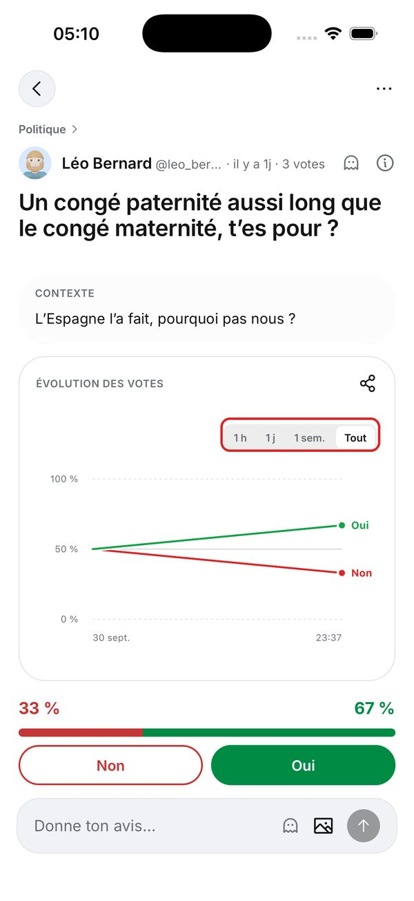
Aujourd'hui
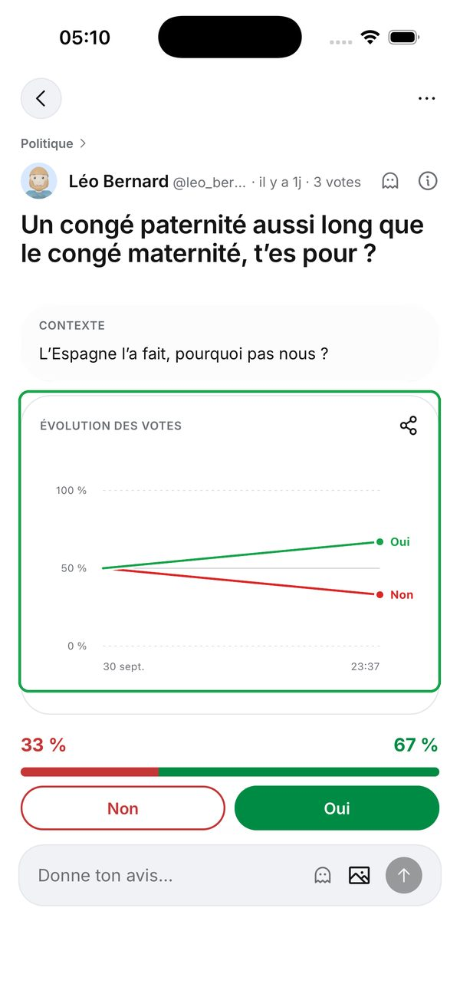
Solution
Aujourd'hui. Le graphique propose quatre durées. Sur un take d'un jour, 1 j, 1 sem. et Tout tracent la même courbe (captures t2-25).
Solution. La courbe entière, sans sélecteur, tant que le take a moins d'une semaine ; le sélecteur revient quand les durées montrent vraiment autre chose.
Dans le code : src/components/poll/OddsChart.tsx:42-55 : les quatre durées, affichées quel que soit l'âge du take.
12Fusionner Deux fantômes sur le même take
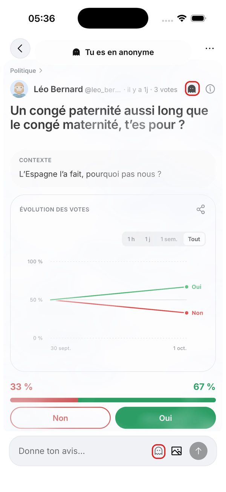
Aujourd'hui
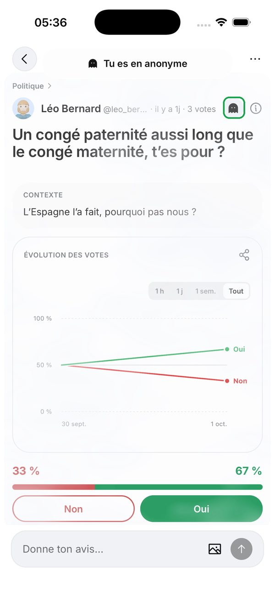
Solution
Aujourd'hui. Le take ouvert a un fantôme dans la ligne de l'auteur (voter en anonyme) et un autre dans « Donne ton avis… » (commenter en anonyme). Deux réglages distincts, à deux endroits du même écran.
Solution. Un seul fantôme, en haut, pour le take entier : voter et commenter en anonyme vont ensemble.
Dans le code : app/(app)/poll-comments.tsx:709 (anonymousVote) et 1472 (toggleAnonymousComment) : deux états séparés.
13Fusionner « Enregistrer en GIF » et « Partager la carte »
Aujourd'hui
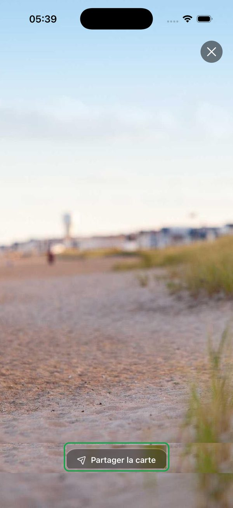
Solution
Aujourd'hui. La visionneuse d'une photo du fil propose deux boutons qui fabriquent chacun une image du take : un GIF enregistré dans Photos, et une carte à partager.
Solution. Un seul « Partager la carte » ; la feuille iOS qui s'ouvre propose déjà « Enregistrer l'image ».
Dans le code : src/components/ImageViewerModal.tsx:176 et 478-499 : saveGifToPhotos et shareCard, deux boutons.
Tour 3 · La création
14Simplifier « 0/280 » avant la première lettre
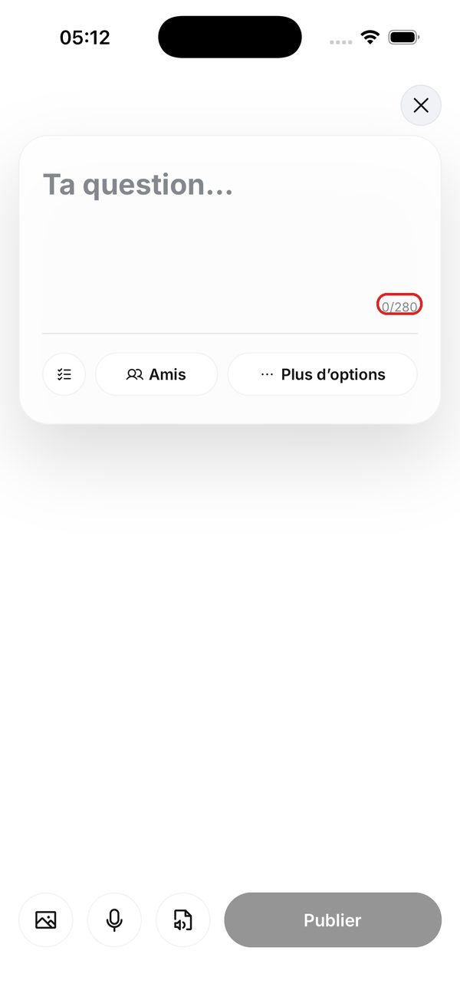
Aujourd'hui
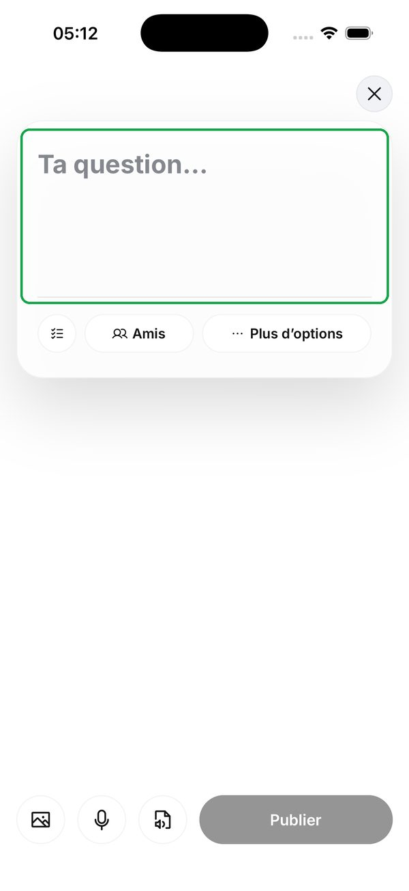
Solution
Aujourd'hui. Le champ de la question compte « 0/280 » à vide. Le champ contexte, lui, ne compte qu'une fois qu'on écrit, parce qu'« une boîte vide qui compte 0/280 se lit comme un champ à remplir ». Même chose pour Nom 10/50, Nom d'utilisateur 10/20, Bio 53/160.
Solution. La même règle partout : le compteur apparaît quand on écrit, et ne vire au rouge qu'à 30 caractères de la limite.
Dans le code : src/components/create/ComposeInput.tsx:61 affiche toujours {value.length}/{maxLength} ; ComposeBio.tsx:13 pose la règle inverse.
15Fusionner Deux boutons pour le son
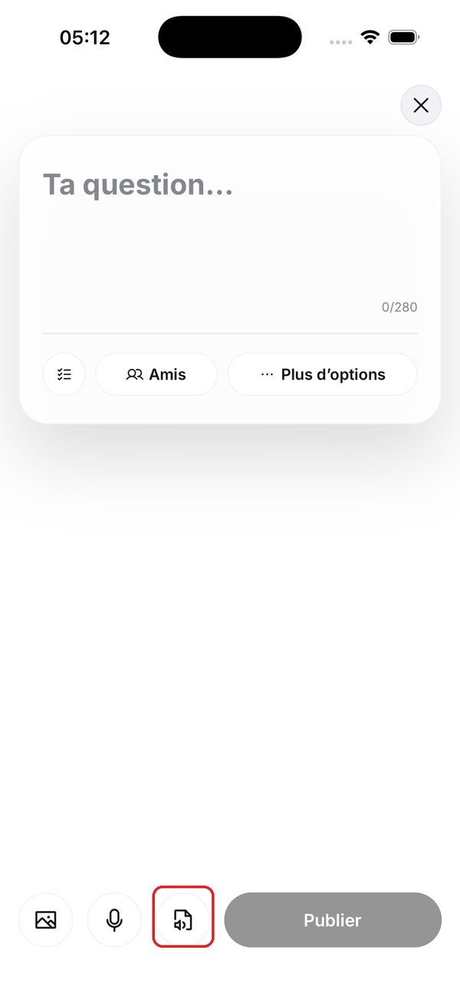
Aujourd'hui
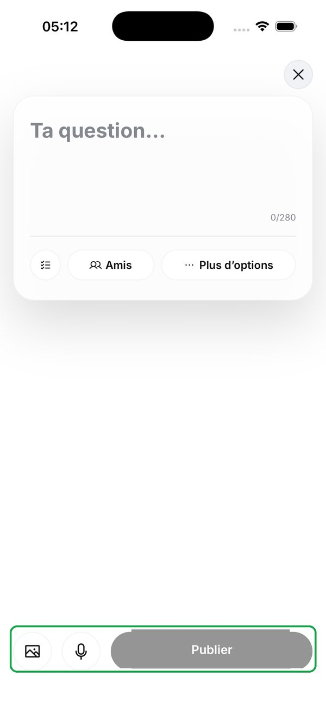
Solution
Aujourd'hui. Sous le composeur : photo, micro (enregistrer) et fichier audio (importer). L'import ouvre Fichiers, vide chez presque tout le monde (t3-16 « Rien de récent »).
Solution. Un seul bouton son : appui, on enregistre ; l'import reste dans son menu. « Publier » reprend la place.
Dans le code : app/(app)/create.tsx:1419 : importAudio sur un bouton à part (FileAudioIcon).
16Supprimer « Plus d'options » pour une seule option : Expire
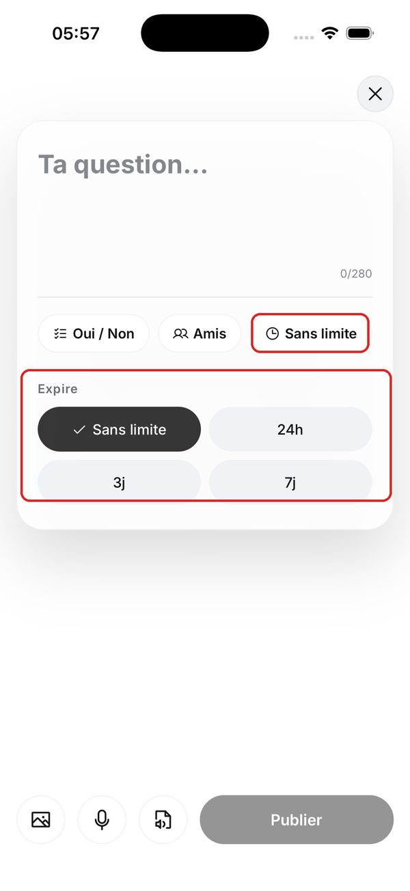
Aujourd'hui
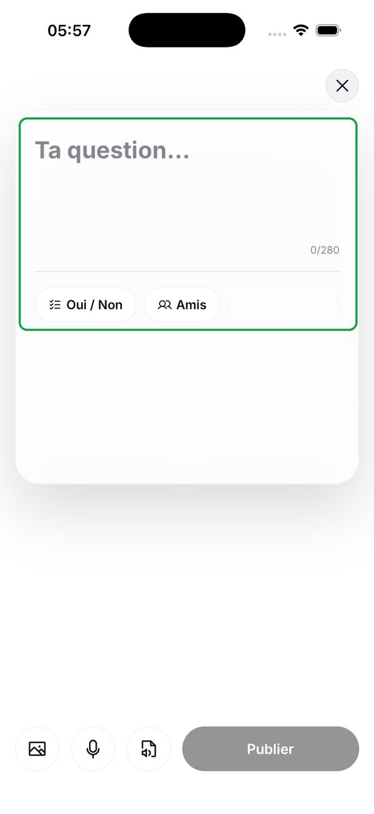
Solution
Aujourd'hui. Dans le composeur, « Plus d'options » n'ouvre qu'un réglage : Expire (Sans limite, 24h, 3j, 7j). Un take qui disparaît tout seul, c'est une option de plus que presque personne ne touche.
Solution. Plus de puce ni d'expiration : un take reste. (Variante : la puce « Sans limite » directement, sans « Plus d'options ».)
Dans le code : app/(app)/create.tsx:157 (EXPIRY_CHOICES) et 257 (moreOptionsOpen) : le panneau ne contient que l'expiration.
17Cacher Un classement d'une ligne : « 1 Toi 0 »
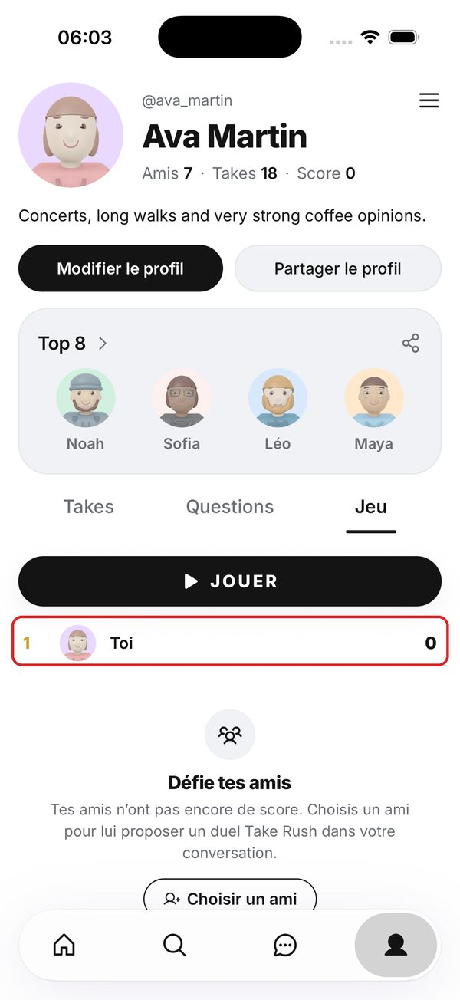
Aujourd'hui
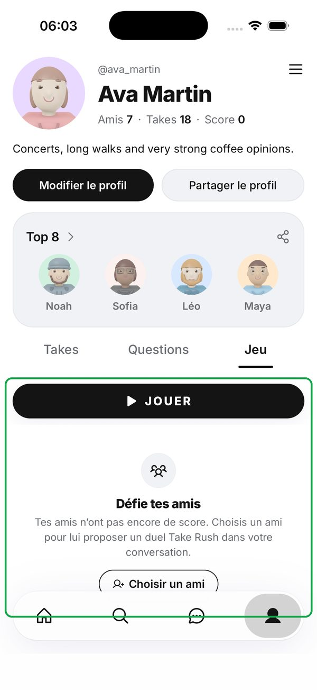
Solution
Aujourd'hui. L'onglet Jeu du profil montre un classement avec une seule ligne, soi-même à 0, puis « Défie tes amis : tes amis n'ont pas encore de score ».
Solution. Pas de classement tant qu'on est seul : « JOUER » puis « Défie tes amis ».
Dans le code : Capture t3-23 : le classement s'affiche avec une seule entrée (la sienne).
Tour 4 · Le profil et l'avatar
18Supprimer « Score 0 » dans l'en-tête du profil
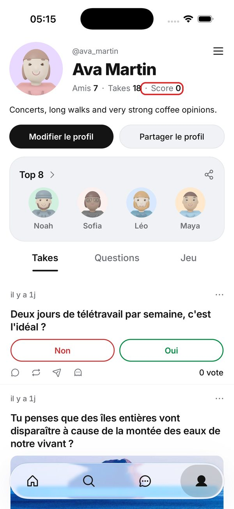
Aujourd'hui
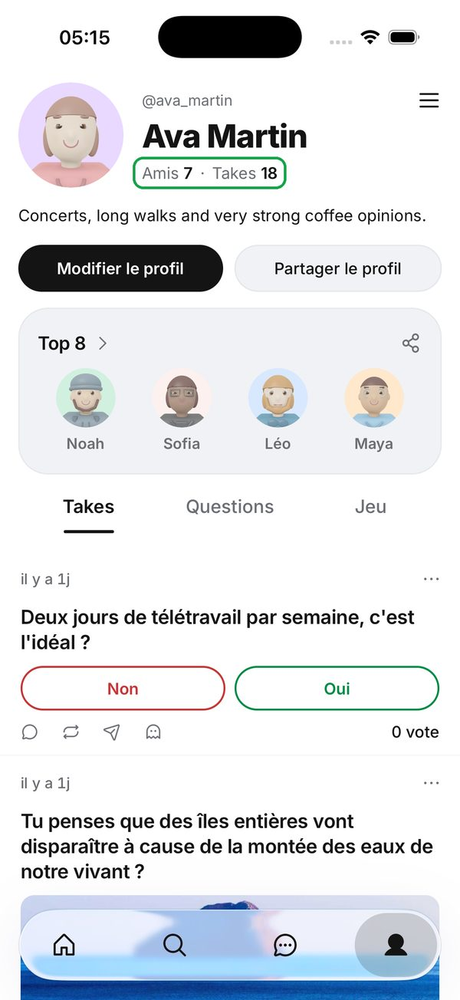
Solution
Aujourd'hui. « Amis 7 · Takes 18 · Score 0 » : le score est le meilleur score de Take Rush, et l'onglet Jeu, trois rangs plus bas, l'affiche déjà avec le classement.
Solution. « Amis 7 · Takes 18 » ; le score reste dans l'onglet Jeu.
Dans le code : app/(app)/(home)/profile.tsx:884-891 : bestScore, qui ouvre /(app)/game ; même chose dans u/[username].tsx:1246.
19Supprimer Un bouton « Message » sur chaque ami
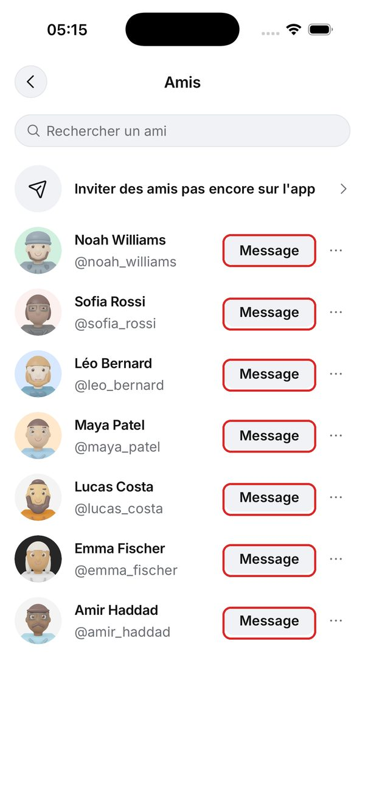
Aujourd'hui
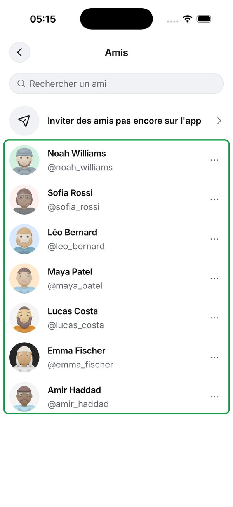
Solution
Aujourd'hui. La liste Amis pose « Message » et « … » sur chaque ligne. Toucher la ligne ouvre déjà le profil, qui a son « Message ».
Solution. Des lignes simples : le visage, le nom, le « … ».
Dans le code : app/(app)/friends.tsx:486-496 : handleMessage sur un bouton par ami.
20Supprimer Pronoms, Genre, Catégorie : trois champs que personne ne voit
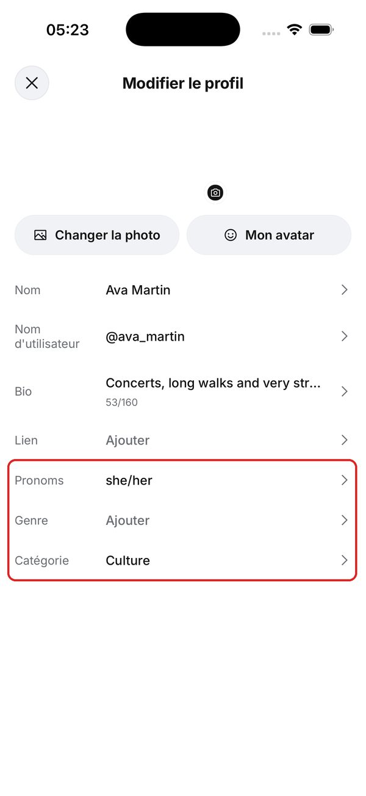
Aujourd'hui
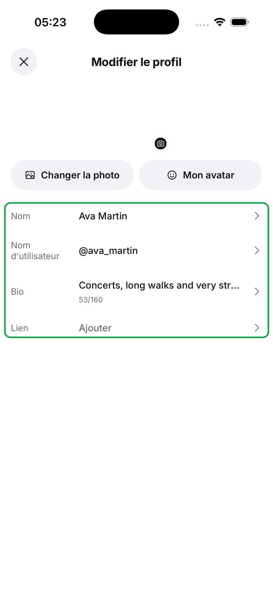
Solution
Aujourd'hui. Modifier le profil propose Pronoms, Genre et Catégorie. Le profil ne les affiche nulle part, ni sur l'app ni sur le web. Le code le dit : ils restent « parce que ce sont les seules entrées de leur éditeur ».
Solution. Les trois lignes partent, et leur éditeur avec ; le profil garde Nom, Nom d'utilisateur, Bio et Lien.
Dans le code : app/(app)/edit-profile.tsx:43-46 (« NOT in the pen frame ») ; aucun écran de profil ne lit pronouns, gender ni category_id.
21Supprimer Le menu « … » de ses propres takes : une seule ligne
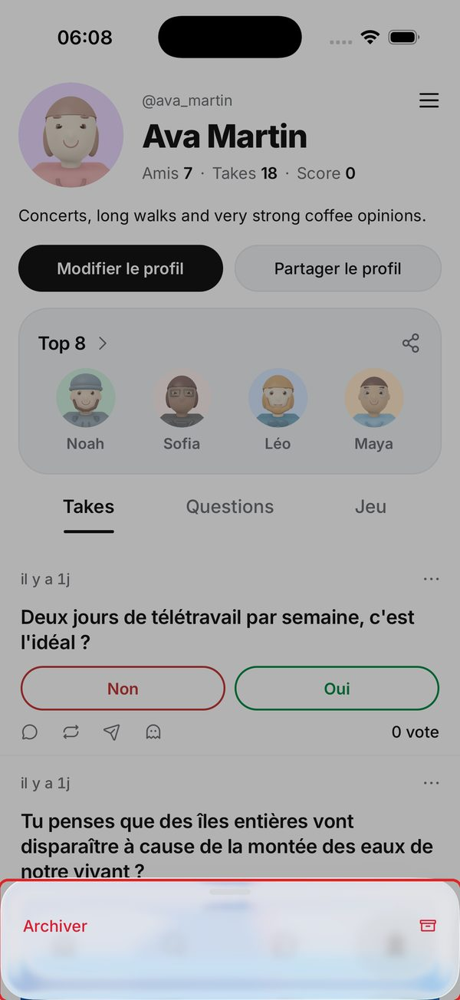
Aujourd'hui
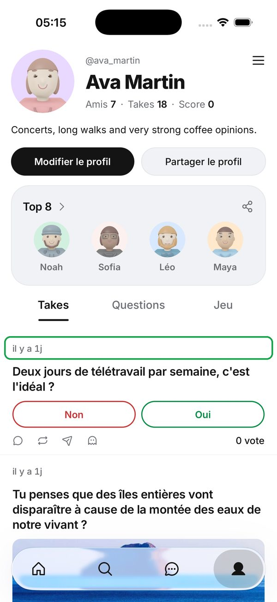
Solution
Aujourd'hui. Sur son profil, le « … » d'un take à soi ouvre une feuille avec une seule ligne, « Archiver » (même motif que le 97, ailleurs).
Solution. Plus de « … » sur ses propres takes dans la liste ; « Archiver » se trouve dans le menu du take ouvert, qui a déjà ses autres actions.
Dans le code : Captures t4-06 (feuille à une ligne) et t1-23 (le « … » sur chaque take).
22Supprimer « Ajuster » les cheveux : une feuille pour un dégradé
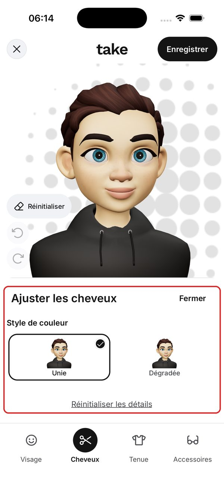
Aujourd'hui
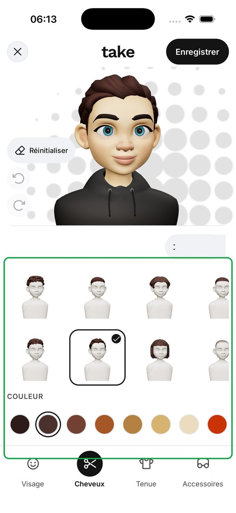
Solution
Aujourd'hui. Le bouton « Ajuster » des cheveux ouvre une feuille avec une seule option, « Unie » ou « Dégradée », et « Réinitialiser les détails ».
Solution. Plus de bouton ni de feuille : une couleur de cheveux, unie.
Dans le code : fr.json : hairColorStyle, gradient et resetHairDetails, seuls contenus de la feuille.
23Supprimer Joues, cils, taches de rousseur : les réglages fins qui restent
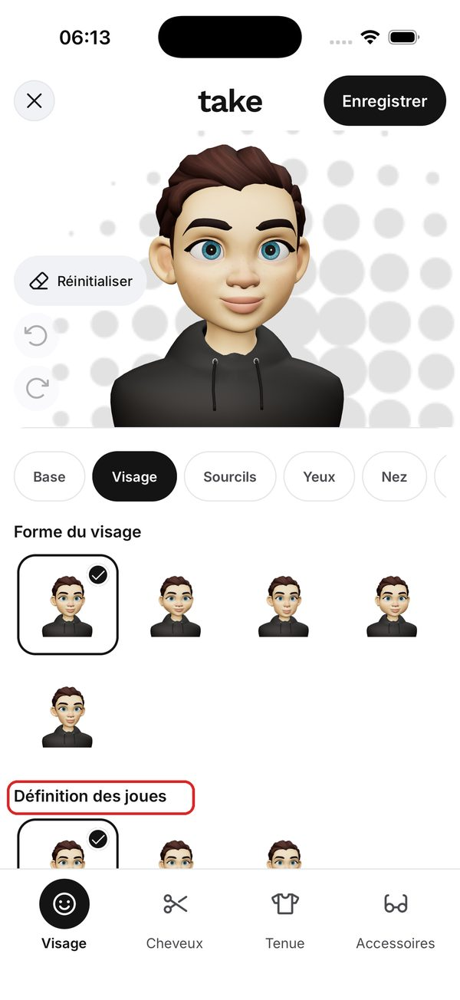
Aujourd'hui
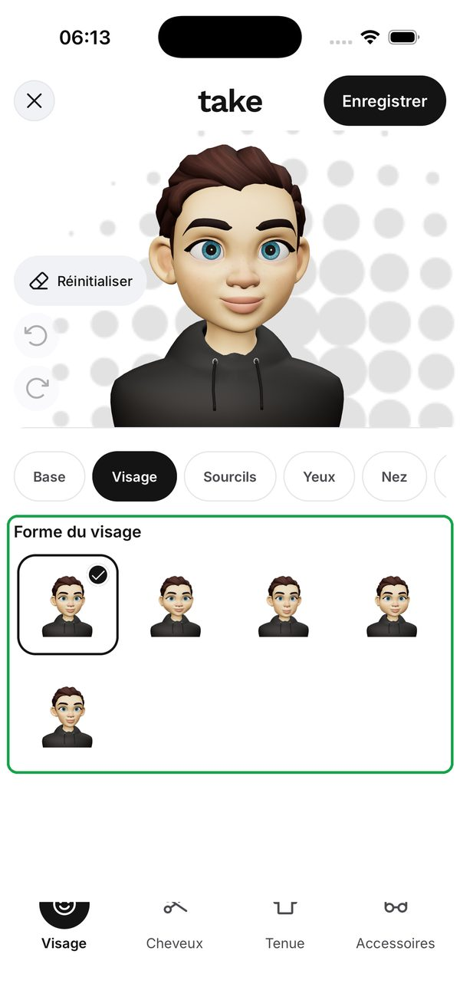
Solution
Aujourd'hui. Après les rides et les curseurs (80, accepté), l'atelier garde « Définition des joues », « Cils » et « Taches de rousseur », invisibles à la taille d'un avatar dans le fil.
Solution. Les trois sections partent ; chaque sous-onglet garde sa forme principale.
Dans le code : fr.json:981-994 : freckles, cheekDefinition, eyelashes.
Tour 5 · Les messages
24Supprimer La légende au-dessus de chaque défi Know me
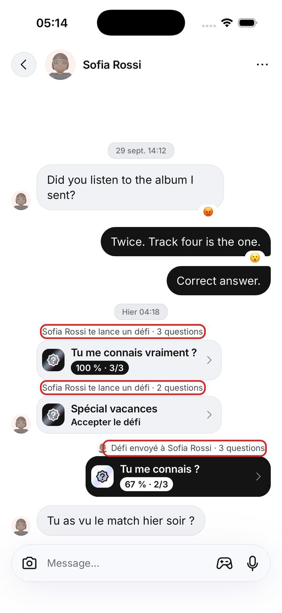
Aujourd'hui
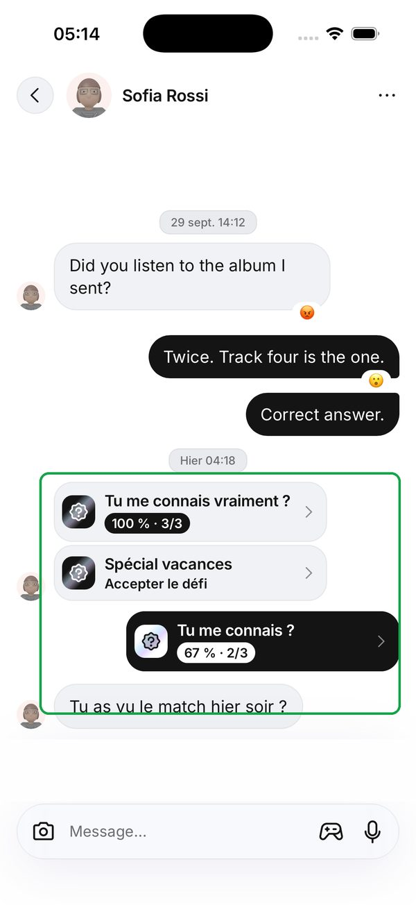
Solution
Aujourd'hui. Dans une conversation à deux, chaque carte de défi porte une ligne au-dessus : « Sofia Rossi te lance un défi · 3 questions », « Défi envoyé à Sofia Rossi · 3 questions ». Le côté de la bulle dit déjà qui l'a envoyé.
Solution. Les cartes seules, comme les autres messages.
Dans le code : src/components/knowme/KnowMeChallengeCard.tsx:83-125 : knowMe.card.invite / sentTo + knowMe.questionCount au-dessus de la carte.
25Supprimer « @gonlien2852 » deux fois
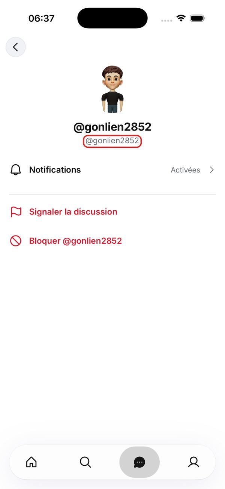
Aujourd'hui
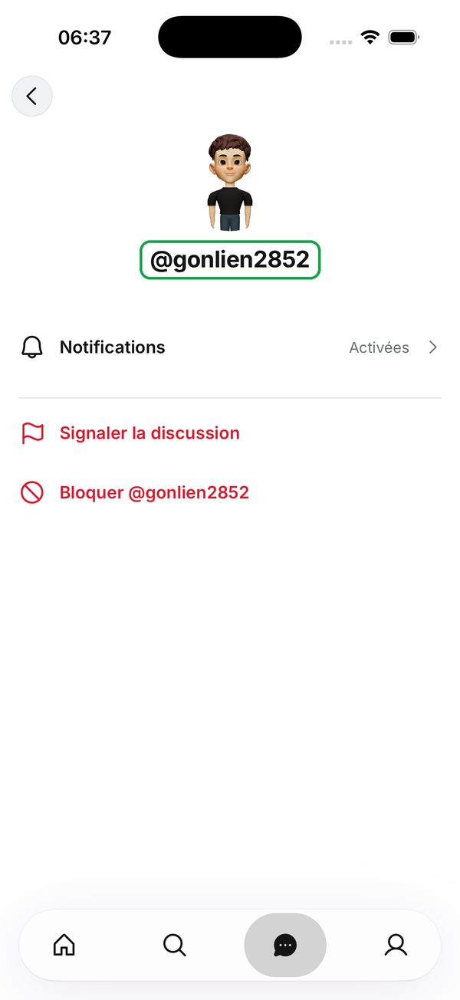
Solution
Aujourd'hui. Les Détails d'un compte sans nom affiché répètent le pseudo : en titre, puis en sous-titre.
Solution. Le pseudo une fois, en titre.
Dans le code : app/(app)/(home)/messages/details.tsx:78-90 : titre et sous-titre tombent tous deux sur username quand le nom manque.
26Supprimer 100 %, 3 sur 3, sans-faute : trois fois la même chose
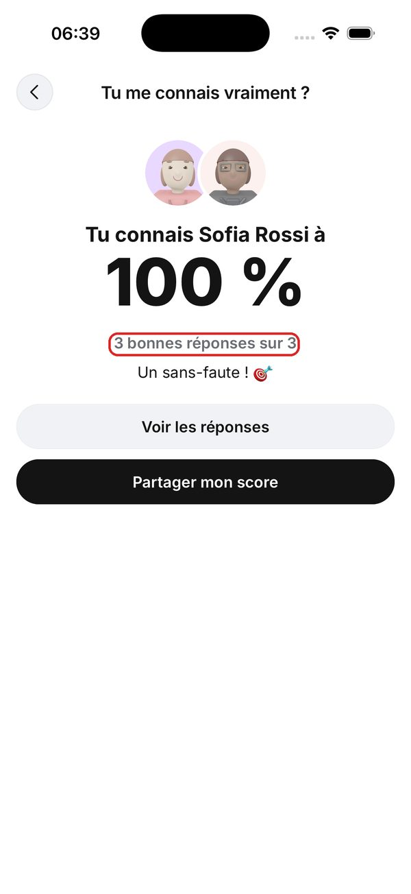
Aujourd'huiSolution
Aujourd'hui. Le résultat d'un Know me dit « 100 % », puis « 3 bonnes réponses sur 3 », puis « Un sans-faute ! ».
Solution. Le grand pourcentage et la phrase qui réagit ; le détail est dans « Voir les réponses ».
Dans le code : fr.json:2947-2950 : count_other et perfect, affichés sous le pourcentage.
27Supprimer « Question 1 », « Question 2 »… sur chaque réponse
Aujourd'huiSolution
Aujourd'hui. Les réponses d'un Know me numérotent chaque carte en petit gris au-dessus de la question.
Solution. La question et la réponse, sans numéro : l'ordre se voit.
Dans le code : fr.json:2833 : questionNumber.
28Supprimer « Précédente » dans un quiz de deux questions
Aujourd'huiSolution
Aujourd'hui. Un Know me de deux ou trois questions a un bouton « Précédente », grisé à la première.
Solution. Plus de retour en arrière : on répond, la question suivante arrive (125, accepté).
Dans le code : fr.json:2928 : previous.
Tour 6 · L'activité et Explorer
29Supprimer La pastille sur l'avatar qui redit le verbe
Aujourd'huiSolution
Aujourd'hui. Chaque ligne d'Activité pose une pastille sur l'avatar (repost, vote, Top 8) alors que la phrase dit déjà « a reposté », « a voté ».
Solution. L'avatar seul : la phrase porte l'action.
Dans le code : app/(app)/notifications.tsx:188 : NotificationBadge sur chaque ligne à un seul acteur, sauf les amis acceptés.
30Fusionner Trois lignes « a accepté ta demande d'ami » le même jour
Aujourd'huiSolution
Aujourd'hui. Noah, Sofia et Léo ont accepté le même jour : trois lignes presque identiques, quand deux reposts du même take tiennent déjà en une.
Solution. Une ligne, deux visages : « Noah Williams, Sofia Rossi et 1 autre ont accepté ta demande d'ami ».
Dans le code : app/(app)/notifications.tsx:169 : NotificationFaces existe déjà pour les groupes ; les acceptations d'amis ne sont pas regroupées.
31Supprimer Cinq filtres pour une vingtaine de lignes
Aujourd'huiSolution
Aujourd'hui. Tout, Votes, Commentaires, Questions et Abonnements (caché à droite). Au tour 6, Commentaires et Questions étaient vides, chacun avec son « Lancer un take », et Votes mêlait reposts et votes.
Solution. Une seule liste, celle de « Tout » : on lit son activité, on ne la trie pas.
Dans le code : app/(app)/notifications.tsx:87 : ACTIVITY_FILTERS = all, votes, comments, questions, follows.
32Supprimer « · Politique » dans l'onglet Politique
Aujourd'huiSolution
Aujourd'hui. Le n°1 de chaque rubrique d'Explorer porte le nom de la rubrique : « 5 votes · Politique » sous l'onglet Politique souligné, « 7 votes · Divertissement » sous Divertissement…
Solution. « 5 votes » seul dans une rubrique ; le nom ne sert que dans Tendances, qui mêle les rubriques.
Dans le code : src/components/search/ExploreScreen.tsx:1034 : explore.trendMeta reçoit toujours la catégorie.
33Supprimer Le point rouge qui pulse en continu
Aujourd'huiSolution
Aujourd'hui. À droite du n°1 de chaque rubrique, un point rouge pulse sans fin, sans légende ni action. Le même genre de pastille pulsante avait déjà été refusé dans le direct.
Solution. Rien : le rang « 1 » dit déjà que c'est le premier.
Dans le code : src/components/search/TrendRanking.tsx:67 : TrendLiveDot, un halo répété sans fin (withRepeat(…, -1)) tant que l'écran est visible.
34Supprimer « Tendances liées » au-dessus des résultats
Aujourd'huiSolution
Aujourd'hui. On tape « vote » : un grand titre « • Tendances liées » et « Ce qui buzze autour de « vote » » précèdent les takes trouvés.
Solution. Les résultats directement sous le champ, qui dit déjà ce qu'on cherche.
Dans le code : src/components/search/ExploreScreen.tsx : explore.relatedTrends et explore.relatedSub au-dessus de relatedTrends.
Tour 7 · Sans compte et connexion
35Fusionner « Se connecter » et « S'inscrire » mènent au même écran
Aujourd'huiSolution
Aujourd'hui. L'accueil propose les deux. Le premier ouvre « Ton e-mail », le second « Crée ton compte » : même champ, même « Recevoir le code ». Seul le titre change.
Solution. Un seul « Continuer avec un e-mail », le bouton que le mur sans compte utilise déjà.
Dans le code : app/(auth)/email.tsx:42 et 144 : signingUp ne change que le titre.
36Supprimer Le bouton « Coller le code »
Aujourd'huiSolution
Aujourd'hui. L'écran du code a un bouton « Coller le code », alors que le champ est déjà marqué pour iOS : le code reçu par Mail s'affiche au-dessus du clavier, en un appui.
Solution. Plus de bouton : la suggestion d'iOS, ou un appui long pour coller.
Dans le code : app/(auth)/code.tsx:237 (textContentType="oneTimeCode") et 263-271 (pasteCode).
Regardés, puis écartés
« Tu es en public » quand on quitte l'anonymat : voulu par toi (25/09, puis message universel le 30/09).
Le « ● 1 » des présents dans le direct : décidé : le zéro et le un s'affichent, la pastille pulsante avait été refusée.
Le faux profil « @toi » sans compte : voulu par toi le 25/09 : sans compte, les écrans personnels gardent leur forme vide.
La barre des takes à note : tu l'as rendue noire le 25/09 ; Jev : la retirer contredit cette décision (0,92).
Les croix sur Choix 1 et Choix 2 : elles servent dès qu'il y a trois choix : on peut retirer n'importe lequel.
Google et Apple qui répondent « bientôt disponible » : le refus vient de la machine locale, sans clés ; à vérifier sur staging avant d'en faire un point.
« Partager » dans le menu du take ouvert : c'est le seul bouton de partage de cet écran.
« Actuellement @ava_martin » sous le nom d'utilisateur : utile pendant qu'on tape le nouveau.
Le champ « Une question à laquelle tu veux répondre… » : c'est une fonction (se poser une question), pas un doublon.
Tendances et Actu vides en tête d'Explorer : données locales ; rien ne prouve le cas en production.